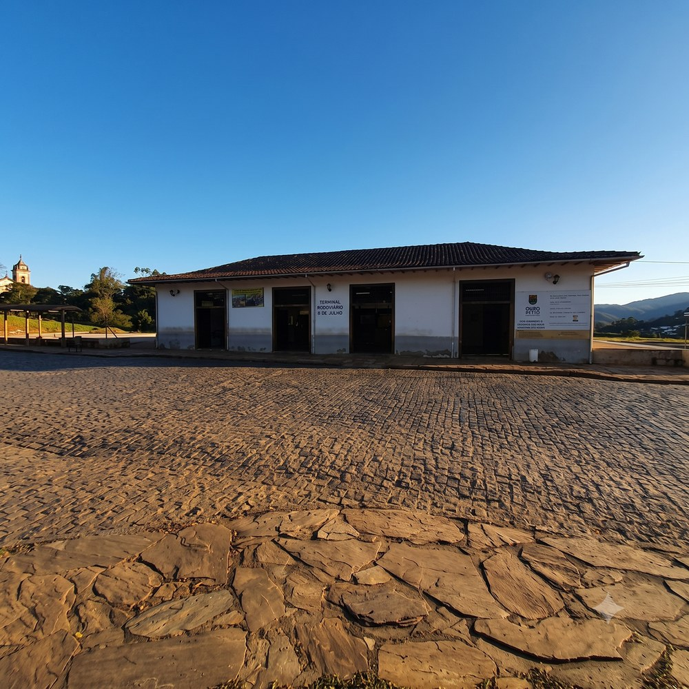
“A natureza, para ser comandada, deve ser obedecida.”
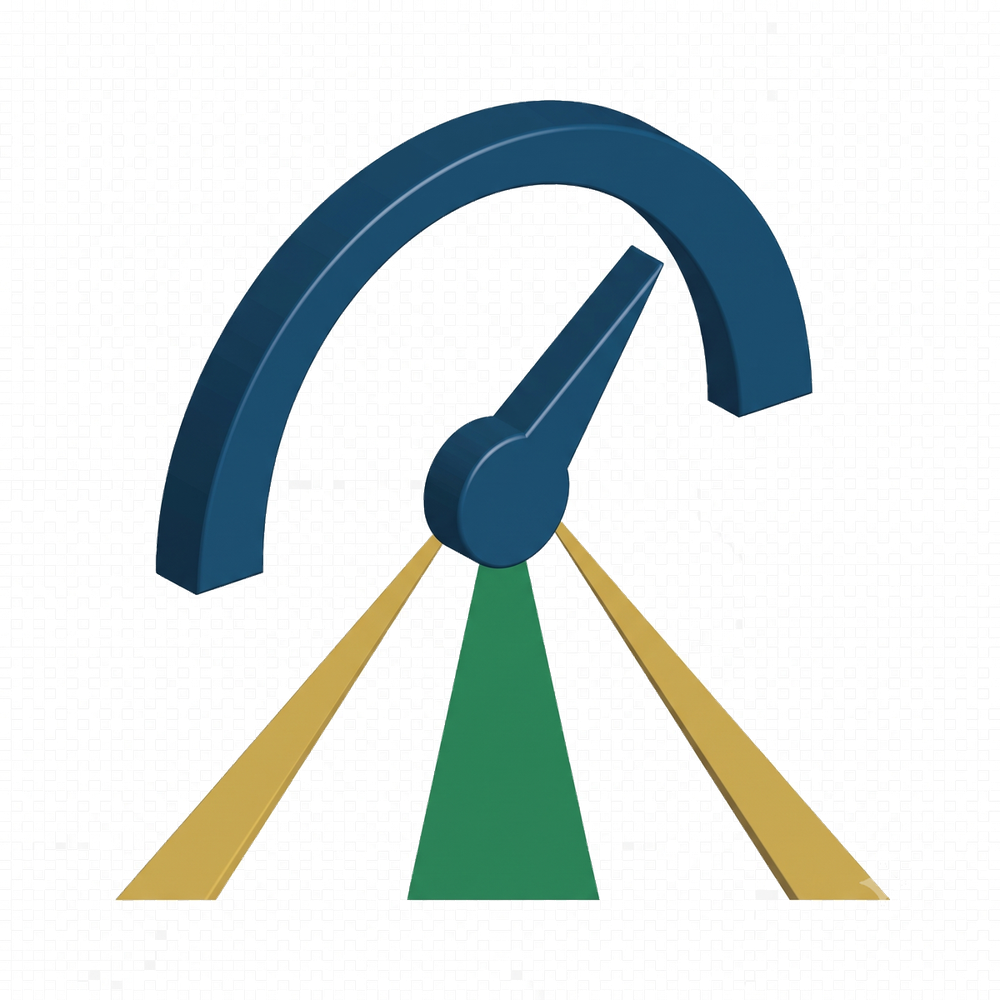
O Terminal Rodoviário 8 de Julho, na Rua Padre Rolim, ainda cheirava a café e diesel às sete e vinte da manhã. Sofia chegou primeiro, mochila nas costas e o caderno de campo debaixo do braço. Pedro apareceu logo atrás, conferindo a passagem impressa; Lucas veio por último, ainda mastigando pão de queijo, com aquela calma de quem nunca perdeu um ônibus na vida. O Prof. Julio já os esperava junto à plataforma, camisa polo em tom terroso, prancheta na mão e três cronômetros emprestados do laboratório.
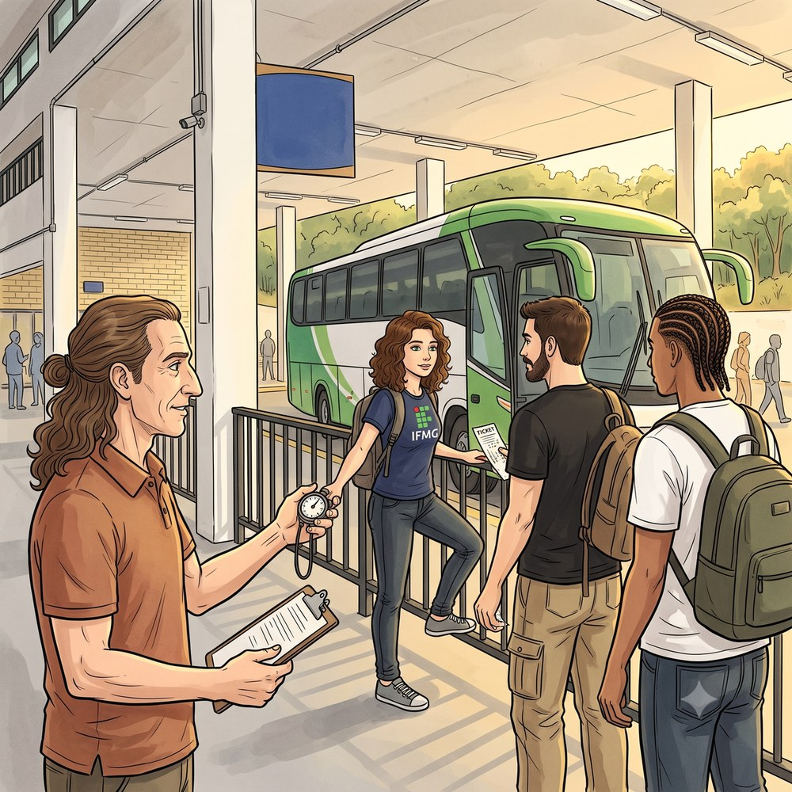
— Hoje a sala de aula é o ônibus — disse o professor, entregando um cronômetro para cada um. — Vocês vão a Belo Horizonte comigo, e a única tarefa é anotar duas coisas: onde estamos e que horas são. Nada mais.
O ônibus da linha Ouro Preto–Belo Horizonte saiu da plataforma às 7h30 em ponto. Sofia anotou o instante zero. Pedro escreveu no alto da página: “Rodoviária de Ouro Preto — km 0”. Lucas apenas olhou pela janela, vendo a cidade barroca ficar para trás enquanto o veículo pegava a BR-356, a Rodovia dos Inconfidentes.
A viagem seguiu o roteiro de sempre. Às 7h55 o ônibus parou em Cachoeira do Campo, distrito de Ouro Preto a 19 km do centro, e ficou dez minutos embarcando passageiros. Às 8h35 encostou na rodoviária de Itabirito, mais 28 km adiante, e parou outros dez minutos. Depois pegou a BR-040 e entrou em Belo Horizonte às 9h30, exatamente duas horas depois da partida, tendo percorrido 107 quilômetros de asfalto.
Foi na descida, ainda dentro do terminal de BH, que a discussão começou.
— Cento e sete quilômetros em duas horas — disse Pedro, fechando o caderno. — Isso dá cinquenta e três e meio por hora. A média da viagem.
Sofia franziu a testa.
— Não pode ser. Eu olhei o velocímetro do motorista na BR-040 e ele marcava oitenta. Ficou nos oitenta um tempão. Como é que a média é cinquenta e três?
— Porque a gente parou duas vezes — respondeu Pedro.
— Mas quando a gente estava parado, a velocidade era zero — completou Lucas, sem levantar os olhos do caderno. — E zero também entra na conta. Então o número do Pedro não é a velocidade do ônibus. É a velocidade da viagem.
Prof. Julio, que ouvia encostado na coluna, finalmente se mexeu.
— Reparem no que vocês acabaram de fazer. Pedro calculou um número que descreve as duas horas inteiras. Sofia leu um número que descrevia um instante específico. Lucas percebeu que existe um terceiro número, o dos trechos em que o ônibus realmente andava. Três números diferentes, todos corretos, todos chamados de “velocidade”.
Ele fez uma pausa.
— A pergunta não é qual está certo. A pergunta é: o que cada um deles responde?
Sofia olhou para o cronômetro na mão, ainda marcando 2h00min00s, e pensou que talvez a velocidade não fosse uma propriedade do ônibus, mas uma propriedade do intervalo de tempo que se escolhe olhar.
Ela ainda não sabia, mas tinha acabado de tropeçar na diferença entre velocidade média e velocidade instantânea.
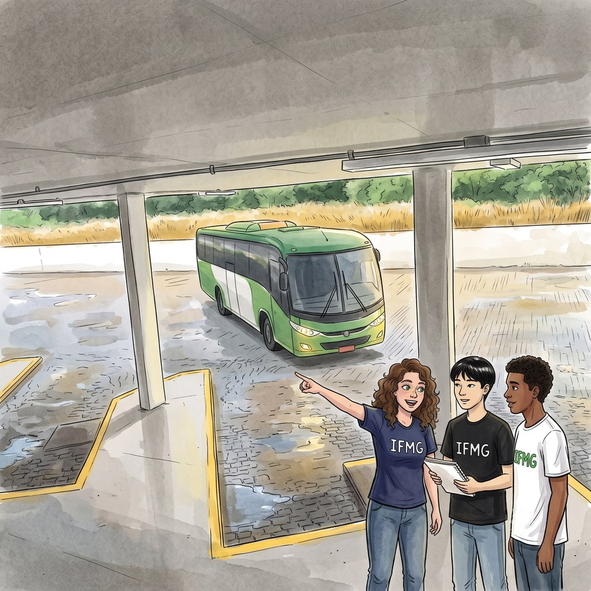
O Terminal Rodoviário 8 de Julho fica na Rua Padre Rolim, 661, no bairro São Cristóvão, a poucos minutos a pé do centro histórico de Ouro Preto. É de lá que partem, todos os dias, os ônibus da linha para Belo Horizonte — o mesmo trajeto que Sofia, Pedro e Lucas fizeram nesta trilha.
Procure a plataforma de embarque e siga com o olhar a saída dos veículos: eles pegam a Rua Padre Rolim e, logo adiante, entram na BR-356, a Rodovia dos Inconfidentes. Essa estrada não foi traçada por acaso — ela acompanha, em boa parte, o mesmo corredor natural entre serras que as tropas de muares usavam no século XVIII para escoar o ouro do Quadrilátero Ferrífero.
Repare no relevo: em nenhum momento a estrada é plana. Cada curva da serra, cada subida, cada trecho de pista simples é um pedaço de tempo a mais no cronômetro — e, portanto, um pedaço de velocidade média a menos. A geografia de Minas está escrita no velocímetro.
Vale a pena ir até lá e cronometrar você mesmo o trecho até Cachoeira do Campo. Compare o seu número com os 19 km em 25 minutos desta trilha. A Física não pede que você acredite: ela pede que você meça.
Toda medida de velocidade começa com duas perguntas simples: quanto o corpo mudou de posição e quanto tempo isso levou. No painel de um ônibus interestadual, essas duas respostas estão lado a lado — o hodômetro conta os quilômetros, o relógio conta as horas. A imagem a seguir mostra exatamente esse par de instrumentos, os dois números de que a Física precisa para dizer o quão rápido alguém foi.
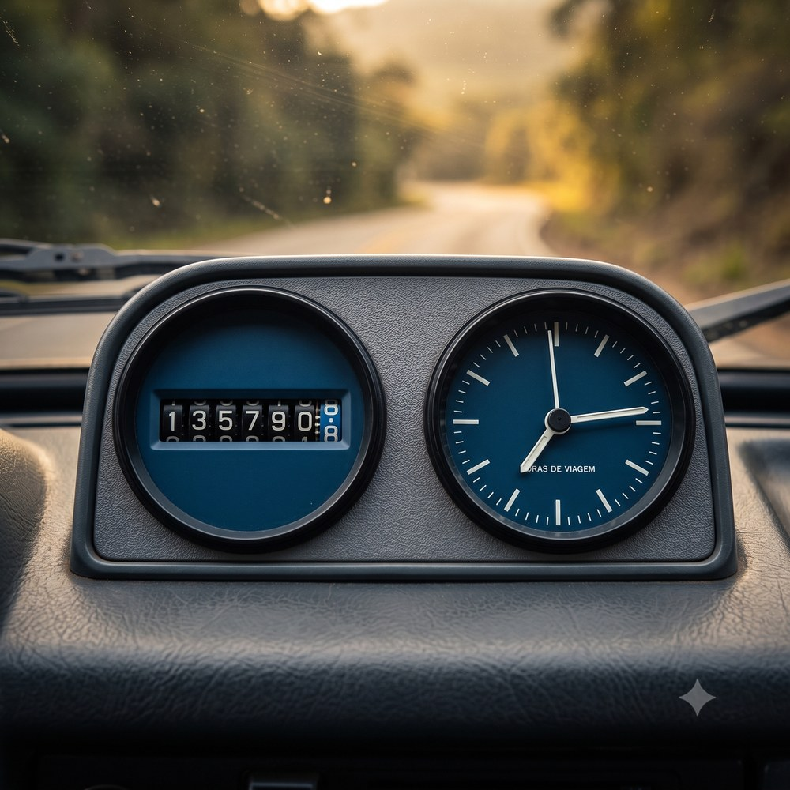
No Brasil colonial, medir velocidade era medir tempo de viagem. As tropas de muares que desciam a Estrada Real levando ouro de Vila Rica até o litoral avançavam cerca de 4 km/h e cumpriam jornadas de aproximadamente oito horas por dia — algo em torno de 32 km diários. Ninguém falava em “quilômetros por hora”: falava-se em “três dias de tropa até o arraial seguinte”. A velocidade existia como experiência prática muito antes de existir como fração.
Velocidade média é a razão entre o deslocamento de um corpo e o intervalo de tempo gasto nesse deslocamento. É uma grandeza que resume um percurso inteiro em um único número: não informa o que aconteceu em cada momento, apenas o efeito global. Por depender do deslocamento (Δs), e não da distância percorrida, a velocidade média carrega sinal — ela indica também o sentido do movimento em relação ao referencial adotado.
Na mineração, a velocidade média é a unidade básica de planejamento. O tempo de ciclo de um caminhão fora de estrada é calculado a partir da velocidade média em cada trecho da cava; a velocidade média de uma correia transportadora define a produção horária da usina. Um engenheiro que confunda velocidade média com velocidade de pico superestima a produção e compromete o cronograma de lavra de um mês inteiro.
De volta a Ouro Preto, o Prof. Julio escreveu no quadro o número de Pedro e pediu que a turma o justificasse.
— O ônibus saiu do km 0 e chegou ao km 107. Levou duas horas. A conta que o Pedro fez tem nome.
Antes de escrevê-la no quadro, porém, o professor fez um aviso.
— Na trilha passada usamos a letra x para posição. A partir de agora vamos usar s. Não é capricho meu: é a notação do livro de vocês.
A troca tem uma razão prática. O livro Física Identidade, adotado pelo PNLD e usado nesta disciplina, representa a posição por s, a posição inicial por s0 e o deslocamento escalar por Δs = s − s0; os instantes, por t0 e t, com o intervalo dado por Δt = t − t0. Adotar a mesma notação a partir desta trilha permite que você leia o livro e a trilha sem precisar traduzir símbolos no meio do caminho. O que muda é a letra, não o conceito: s continua sendo a posição medida sobre a trajetória orientada, exatamente como o marco quilométrico de uma rodovia. O próprio livro apresenta a ideia assim, usando os marcos da BR-230. Nesta trilha, os marcos são os da BR-356.
| Símbolo | Grandeza | Unidade SI |
|---|---|---|
| vm | Velocidade média | m/s (metro por segundo) |
| Δs | Deslocamento | m (metro) |
| Δt | Intervalo de tempo | s (segundo) |
O número de Pedro estava certo. O que faltava era entender o que ele descreve: não o estado do ônibus em nenhum instante específico, mas o efeito acumulado de duas horas inteiras de viagem — incluindo os vinte minutos em que o veículo esteve completamente parado.
A unidade do Sistema Internacional para velocidade é o metro por segundo. O quilômetro por hora é uma unidade prática, herdada do trânsito, e a conversão entre as duas se faz pela regra da cadeia — multiplicando por frações que valem 1.
| Sentido da conversão | Operação |
|---|---|
| km/h → m/s | dividir por 3,6 |
| m/s → km/h | multiplicar por 3,6 |
Sofia achou o resultado desconcertante. Quinze metros por segundo é a largura de uma quadra de vôlei percorrida em um piscar de olhos. E ainda assim a viagem levou duas horas.
— É que a gente não sente o segundo — comentou Lucas. — A gente sente a hora.
Como o deslocamento pode ser positivo ou negativo, a velocidade média herda esse sinal. O intervalo de tempo é sempre positivo — o tempo só corre num sentido —, então o sinal de vm é sempre o mesmo sinal de Δs.
| Situação | Δs | Δt | vm | Interpretação |
|---|---|---|---|---|
| Ouro Preto → Belo Horizonte | +107 km | +2,0 h | +53,5 km/h | Move-se no sentido positivo |
| Belo Horizonte → Ouro Preto | −107 km | +2,0 h | −53,5 km/h | Move-se no sentido oposto |
| Ida e volta no mesmo dia | 0 km | +4,0 h | 0 km/h | Voltou à origem: deslocamento nulo |
A terceira linha do quadro costuma causar espanto. Um ônibus que roda 214 km em quatro horas tem velocidade média zero se terminar exatamente onde começou. Não há erro na conta: a velocidade escalar média mede a mudança de posição, não o esforço gasto no caminho. Quem quiser descrever o esforço precisa recorrer à distância percorrida, e não ao deslocamento escalar Δs.
Uma viagem raramente é um bloco único. A de Sofia, Pedro e Lucas teve três trechos de estrada e duas paradas, cada um com sua própria velocidade. A imagem a seguir mostra o caderno de campo aberto sobre o banco do ônibus, com a tabela de três linhas que os três preencheram durante o percurso — e que revelaria o erro mais comum de toda a cinemática.
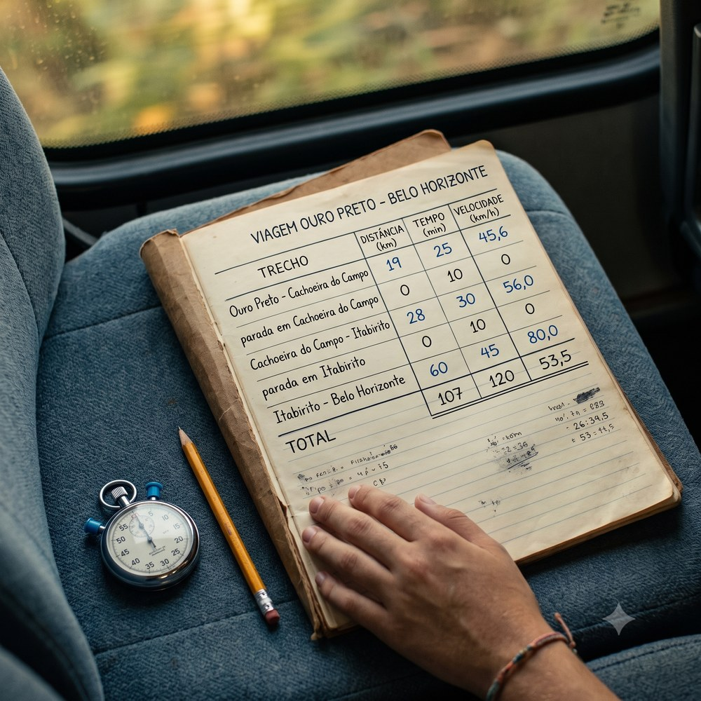
As tropas que percorriam a Estrada Real não mantinham ritmo constante. Nos trechos planos dos campos gerais, os muares avançavam a 5 km/h; nas subidas da Serra do Espinhaço, caíam para menos de 3 km/h; e havia as paradas obrigatórias nos registros, onde a Coroa conferia e taxava o ouro. Os tropeiros experientes não calculavam médias: decoravam o tempo total entre dois pousos, porque sabiam, empiricamente, que somar velocidades não funcionava.
A velocidade média de um percurso composto é o deslocamento total dividido pelo intervalo de tempo total — e não a média aritmética das velocidades parciais. As duas coisas só coincidem no caso particular em que todos os trechos duram exatamente o mesmo tempo. Sempre que os intervalos são diferentes, cada trecho “pesa” na média proporcionalmente à sua duração, e não à sua distância.
O planejamento de transporte numa mina depende dessa distinção. O ciclo de um caminhão fora de estrada envolve carregamento (parado), subida carregado (lento), descarga (parado) e descida vazio (rápido). Um engenheiro que calcule a produtividade da frota pela média aritmética das velocidades de cada etapa superestima a produção — às vezes em mais de 20% — e compromete o contrato de entrega da mina.
Prof. Julio pediu que os três organizassem no quadro tudo que haviam anotado. O resultado foi este:
| Trecho | Percurso | Δs (km) | Δt (min) | vm do trecho (km/h) |
|---|---|---|---|---|
| 1 | Ouro Preto → Cachoeira do Campo | 19 | 25 | 45,6 |
| — | parada em Cachoeira do Campo | 0 | 10 | 0 |
| 2 | Cachoeira do Campo → Itabirito | 28 | 30 | 56,0 |
| — | parada em Itabirito | 0 | 10 | 0 |
| 3 | Itabirito → Belo Horizonte | 60 | 45 | 80,0 |
| TOTAL | 107 | 120 | 53,5 |
— Agora a pergunta — disse o professor. — Alguém consegue chegar aos 53,5 km/h somando as velocidades dos três trechos e dividindo por três?
Pedro tentou: (45,6 + 56,0 + 80,0) ÷ 3 = 60,5 km/h.
— Deu 60,5. Não bate.
— E nem deveria — respondeu Prof. Julio. — Você acabou de descobrir a armadilha mais antiga da cinemática.
A velocidade média de um percurso composto se obtém somando todos os deslocamentos e todos os intervalos de tempo — nunca somando velocidades.
| Símbolo | Grandeza | Unidade SI |
|---|---|---|
| Δsi | Deslocamento do trecho i | m (metro) |
| Δti | Intervalo de tempo do trecho i | s (segundo) |
A média aritmética (60,5 km/h) trata os três trechos como se fossem igualmente importantes. Mas eles não são: o trecho 3, de 45 minutos, pesa quase o dobro do trecho 1, de 25 minutos. Na velocidade média verdadeira, cada trecho pesa o seu tempo — e as paradas, que duram 20 minutos com deslocamento zero, puxam o resultado para baixo sem que ninguém as perceba na média das médias.
Lucas percebeu que a tabela permitia calcular ainda um terceiro valor: a velocidade média apenas dos trechos em que o ônibus efetivamente andava, descontando as paradas.
| O que se calcula | Δs | Δt | Resultado | Responde à pergunta |
|---|---|---|---|---|
| Viagem completa | 107 km | 2,00 h | 53,5 km/h | Quanto rendeu a manhã inteira? |
| Só os trechos em movimento | 107 km | 1,67 h | 64,2 km/h | Quão rápido o ônibus andou? |
| Média aritmética dos trechos | — | — | 60,5 km/h | Nada — é um erro de cálculo |
— Os dois primeiros números são legítimos — concluiu o professor. — Eles respondem a perguntas diferentes, e por isso são diferentes. O terceiro não responde a pergunta nenhuma: é apenas uma conta errada que parece certa.
Sofia anotou a frase no caderno e sublinhou duas vezes.
Se a velocidade média resume um intervalo inteiro, resta a pergunta que Sofia fez na rodoviária: e o número que o velocímetro mostrava naquele exato momento? A imagem a seguir mostra o painel do ônibus na BR-040, o ponteiro firme nos 80 km/h — o retrato de um instante, não o resumo de uma viagem.
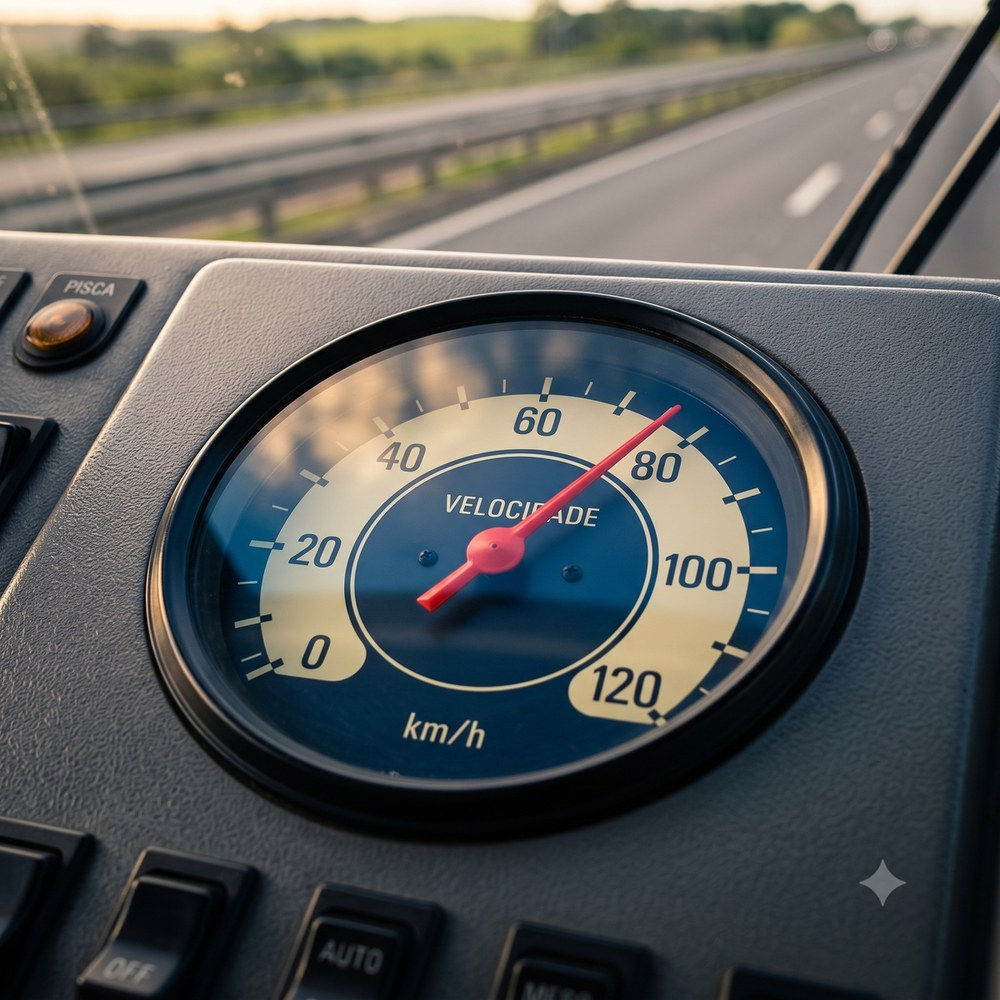
Até o século XVII, ninguém sabia descrever matematicamente a velocidade “num instante” — a própria ideia parecia contraditória, pois num instante não há tempo decorrido e, sem tempo, não há divisão possível. O paradoxo da flecha, formulado por Zenão de Eleia por volta do século V a.C., explorava exatamente essa dificuldade. A solução veio com o cálculo diferencial, desenvolvido de forma independente por Isaac Newton e Gottfried Leibniz no final do século XVII: a velocidade instantânea é o valor para o qual a velocidade média tende quando o intervalo de tempo encolhe indefinidamente.
Velocidade instantânea é o limite da velocidade média quando o intervalo de tempo tende a zero. Na prática, é a velocidade calculada sobre um intervalo tão pequeno que reduzi-lo ainda mais não altera o resultado. É a grandeza que o velocímetro exibe e que os radares de trânsito medem — e é sobre ela, não sobre a média da viagem, que recai a lei.
Sensores de velocidade instantânea são obrigatórios em correias transportadoras de grande porte: uma queda súbita de velocidade indica sobrecarga ou patinagem do tambor de acionamento e dispara o desligamento automático. Em caminhões fora de estrada, telemetria embarcada registra a velocidade instantânea a cada segundo, e a NR-22 obriga o controle de velocidade em rampas de cava, onde exceder o limite instantâneo — mesmo que a média do ciclo esteja correta — é infração grave.
Prof. Julio propôs um exercício mental. O ônibus passa por um ponto da BR-040 exatamente às 9h00.
— Vamos calcular a velocidade média em intervalos cada vez menores, todos centrados nesse instante.
| Δt | Δs correspondente | vm calculada |
|---|---|---|
| 30 min | 39,0 km | 78,0 km/h |
| 5 min | 6,63 km | 79,6 km/h |
| 1 min | 1,332 km | 79,9 km/h |
| 10 s | 222,1 m | 79,96 km/h |
| 1 s | 22,22 m | 80,0 km/h |
— Reparem — disse o professor. — Os valores não vão a lugar nenhum: eles convergem. A partir de certo ponto, encolher o intervalo já não muda a resposta. Esse valor-limite é a velocidade instantânea.
| Símbolo | Grandeza | Unidade SI |
|---|---|---|
| v | Velocidade instantânea | m/s (metro por segundo) |
| Δt → 0 | Intervalo de tempo tendendo a zero | s (segundo) |
O símbolo “lim” e a seta são a forma matemática de dizer algo simples: não importa o quanto eu diminua o intervalo, a resposta é sempre esta. É a mesma ideia que permite falar em “temperatura agora” ou “batimentos por minuto agora” — grandezas médias por definição, que se tornam instantâneas quando o intervalo é pequeno o bastante.
Os dois instrumentos que os estudantes encontram todos os dias medem velocidade instantânea por caminhos diferentes.
O velocímetro conta as voltas da roda. Sabendo o perímetro do pneu, o instrumento converte rotações por segundo em metros por segundo e atualiza o ponteiro dezenas de vezes por minuto — um intervalo curto o bastante para que o motorista o perceba como “agora”.
O radar de solo usa dois sensores no asfalto, separados por uma distância conhecida. O veículo aciona o primeiro e depois o segundo; o equipamento divide a separação pelo tempo entre os dois acionamentos.
| Símbolo | Grandeza | Unidade SI |
|---|---|---|
| d | Separação entre os sensores | m (metro) |
| Δt | Intervalo entre os acionamentos | s (segundo) |
Sofia entendeu a sutileza: o radar não mede um instante verdadeiro. Ele mede uma média sobre um intervalo tão curto que a diferença deixa de importar. É assim que a Física resolve, na prática, um problema que Zenão formulou como paradoxo.
O sinal de uma velocidade não é um detalhe algébrico: é uma informação física sobre o sentido do movimento. Na BR-356, dois ônibus podem cruzar-se a 70 km/h cada um e ainda assim ter velocidades de sinais opostos. A imagem a seguir mostra exatamente esse encontro — dois veículos, a mesma estrada, sentidos contrários — e o eixo orientado que os separa em positivo e negativo.
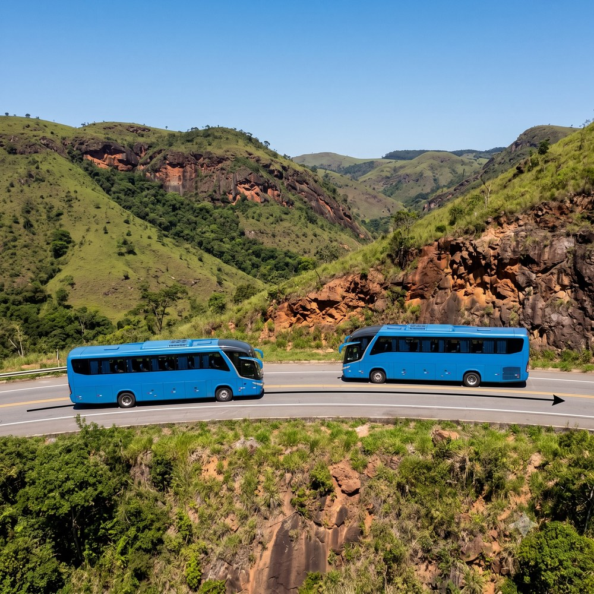
Nas galerias da mineração colonial de Ouro Preto, “descer” e “subir” eram os dois únicos sentidos possíveis, e a distinção era vital: carregado de minério, o trabalhador subia; vazio, descia. Os capatazes contabilizavam separadamente as viagens de ida e de volta porque sabiam que elas tinham ritmos diferentes. Sem nenhum formalismo, aplicavam o que a Física chamaria depois de movimento progressivo e retrógrado.
Adotado um referencial com sentido positivo definido, o movimento é chamado progressivo quando o corpo avança nesse sentido (v > 0) e retrógrado quando avança no sentido oposto (v < 0). O sinal não qualifica o movimento como bom ou ruim, rápido ou lento: informa apenas a orientação. Uma velocidade de −80 km/h tem exatamente o mesmo módulo — a mesma “rapidez” — que uma de +80 km/h.
Em correias transportadoras reversíveis, usadas para alimentar dois silos distintos a partir de um mesmo britador, o sentido de operação é controlado por software e sinalizado no painel como positivo ou negativo. Inverter o sentido sem esvaziar a correia provoca transbordo de material. A NR-22 exige sinalização sonora distinta para cada sentido de acionamento, justamente porque o operador precisa saber o sinal, não apenas o módulo.
Prof. Julio desenhou no quadro a rodovia como uma reta orientada, com a origem na rodoviária de Ouro Preto e o sentido positivo apontando para Belo Horizonte.
— Na ida, o ônibus caminhou de s = 0 até s = +107 km. Na volta, de +107 km de volta a 0.
| Situação | Δs | vm | Classificação |
|---|---|---|---|
| Ouro Preto → Belo Horizonte | +107 km | +53,5 km/h | Progressivo |
| Belo Horizonte → Ouro Preto | −107 km | −53,5 km/h | Retrógrado |
| Ônibus parado em Itabirito | 0 km | 0 km/h | Repouso |
Pedro levantou a mão.
— E se a gente tivesse escolhido Belo Horizonte como origem, com o positivo apontando para Ouro Preto?
— Aí todos os sinais se invertem — respondeu o professor. — A ida vira retrógrada e a volta vira progressiva. E nada de físico muda: só a nossa convenção. É a lição da trilha passada aparecendo de novo — o referencial é escolha nossa; o movimento, não.
Existe um caso que costuma confundir: o instante em que a velocidade vale exatamente zero sem que o corpo esteja parado de fato.
Quando o ônibus encostou em Cachoeira do Campo, ficou dez minutos em repouso — velocidade instantânea nula durante todo o intervalo. Mas considere agora uma situação diferente: um caminhão sobe a rampa da cava, para para engatar a ré e desce de volta. No exato instante em que ele inverte o sentido, sua velocidade instantânea passa por zero — mesmo que ele esteja parado por uma fração de segundo apenas.
| Situação | Duração de v = 0 | O que acontece depois |
|---|---|---|
| Ônibus parado em Itabirito | 10 minutos | Retoma o mesmo sentido (progressivo) |
| Caminhão invertendo na rampa | um instante | Inverte o sentido (passa a retrógrado) |
Lucas resumiu do seu jeito: — Todo movimento que muda de sentido tem que passar pelo zero. Não dá para pular de mais oitenta para menos oitenta sem encostar no zero no caminho.
Era, em linguagem de estudante de dezesseis anos, uma formulação correta do teorema do valor intermediário.
Fora da sala de aula, velocidade deixa de ser uma grandeza a calcular e passa a ser um recurso a administrar. Numa usina de beneficiamento, a velocidade de uma correia transportadora não é uma curiosidade física: é o que define quantas toneladas de minério chegam ao pátio a cada hora. A imagem a seguir mostra essa correia em operação, carregada de minério de ferro britado, com o painel de controle de velocidade ao fundo.
Os engenhos coloniais de Ouro Preto já dependiam de velocidade controlada. Nos monjolos e rodas d’água que moíam o minério aurífero, a velocidade de rotação era ajustada pelo volume de água desviado do córrego: água demais quebrava o eixo, água de menos não movia a carga. Os mestres de engenho regulavam o fluxo por tentativa e erro, buscando empiricamente o ponto em que a produção era máxima — o mesmo problema de otimização que hoje se resolve com sensores e inversores de frequência.
Numa correia transportadora, a vazão mássica de material é o produto de três grandezas: a densidade aparente do material, a área da seção transversal da carga sobre a correia e a velocidade da correia. Como as duas primeiras são fixadas pelo projeto e pelo minério, a velocidade é a única variável de ajuste rápido — e a vazão responde a ela de forma diretamente proporcional.
Correias industriais operam tipicamente entre 1,5 e 5,0 m/s. Abaixo dessa faixa, a produção não compensa o custo de energia; acima, o material segrega e projeta finos, e o desgaste dos roletes cresce rapidamente. O técnico em mineração precisa saber traduzir uma meta de produção em toneladas por hora numa velocidade de correia em metros por segundo — e verificar se essa velocidade está dentro dos limites de projeto.
Prof. Julio trouxe os dados de uma correia real da região.
| Símbolo | Grandeza | Unidade SI |
|---|---|---|
| Qm | Vazão mássica | kg/s (quilograma por segundo) |
| ρ | Densidade aparente do material | kg/m³ |
| A | Área da seção transversal da carga | m² |
| v | Velocidade da correia | m/s |
— Duas mil toneladas por hora — comentou Pedro, impressionado. — É quase o peso de um prédio a cada sessenta minutos.
— E repare no que a equação diz — completou o professor. — Se o supervisor aumentar a velocidade de 3,5 para 4,0 m/s, a vazão sobe na mesma proporção: cerca de 2,3 mil toneladas por hora. Um ajuste de meio metro por segundo vale trezentas toneladas.
No transporte por caminhões fora de estrada, a velocidade aparece indiretamente, através do tempo de ciclo — a duração de uma volta completa: carregamento, percurso carregado, descarga e retorno vazio.
| Etapa | Δt (min) | Velocidade característica |
|---|---|---|
| Carregamento na frente de lavra | 5 | v = 0 (repouso) |
| Percurso carregado (subida) | 8 | ~20 km/h |
| Descarga no britador | 2 | v = 0 (repouso) |
| Retorno vazio (descida) | 5 | ~35 km/h |
| Ciclo completo | 20 | — |
Um ciclo de 20 minutos significa 3 ciclos por hora. Com caçamba de 40 toneladas, cada caminhão entrega 120 t/h. Para atender a correia de 2.000 t/h do exemplo anterior, seriam necessários cerca de 17 caminhões operando simultaneamente — número que a mina precisa manter mesmo com veículos em manutenção.
Sofia fez a conexão com o Tópico 2 e sorriu: o ciclo do caminhão é um percurso composto, com duas etapas de velocidade zero. Calcular a produtividade pela média aritmética das velocidades de subida e descida daria um número bonito e completamente inútil.
Às seis e meia da tarde, o mesmo ônibus da manhã encostou de volta na plataforma do Terminal 8 de Julho. A luz alaranjada do fim de tarde batia nas mesmas paredes que, ao amanhecer, estavam cinzentas de neblina. Sofia desceu primeiro, com o cronômetro ainda no bolso e o caderno cheio; Pedro veio atrás, calculando alguma coisa de cabeça; Lucas foi o último, como sempre, olhando a rodoviária com aquela atenção de quem repara nas coisas depois que elas já aconteceram.
Prof. Julio esperou que os três se juntassem na calçada.
— Vocês saíram daqui às sete e meia e voltaram às dezoito e trinta. Onze horas. Qual foi a velocidade média de vocês hoje?
Pedro abriu a boca para responder e parou. Sofia começou a rir.
— Zero — disse ela. — A gente voltou pro mesmo lugar. Deslocamento zero.
— Duzentos e catorze quilômetros de asfalto — completou Lucas — e velocidade média zero. A Física não está interessada no cansaço da gente.
Velocidade média: o deslocamento dividido pelo intervalo, um número que resume um percurso inteiro. Velocidade instantânea: o mesmo cálculo levado ao limite, um número que descreve um único momento. Entre os dois, a diferença entre a história de uma viagem e a fotografia de um instante dela.
Na próxima trilha, esses números ganharão desenho: o gráfico posição × tempo, onde a velocidade média vira a inclinação de uma reta e a velocidade instantânea vira a inclinação de uma tangente. O que hoje foi tabela, amanhã será curva.
Cinco problemas que conectam a Física com outras áreas do conhecimento técnico e científico. Cada problema exige análise, síntese ou avaliação — Bloom L4 a L6.
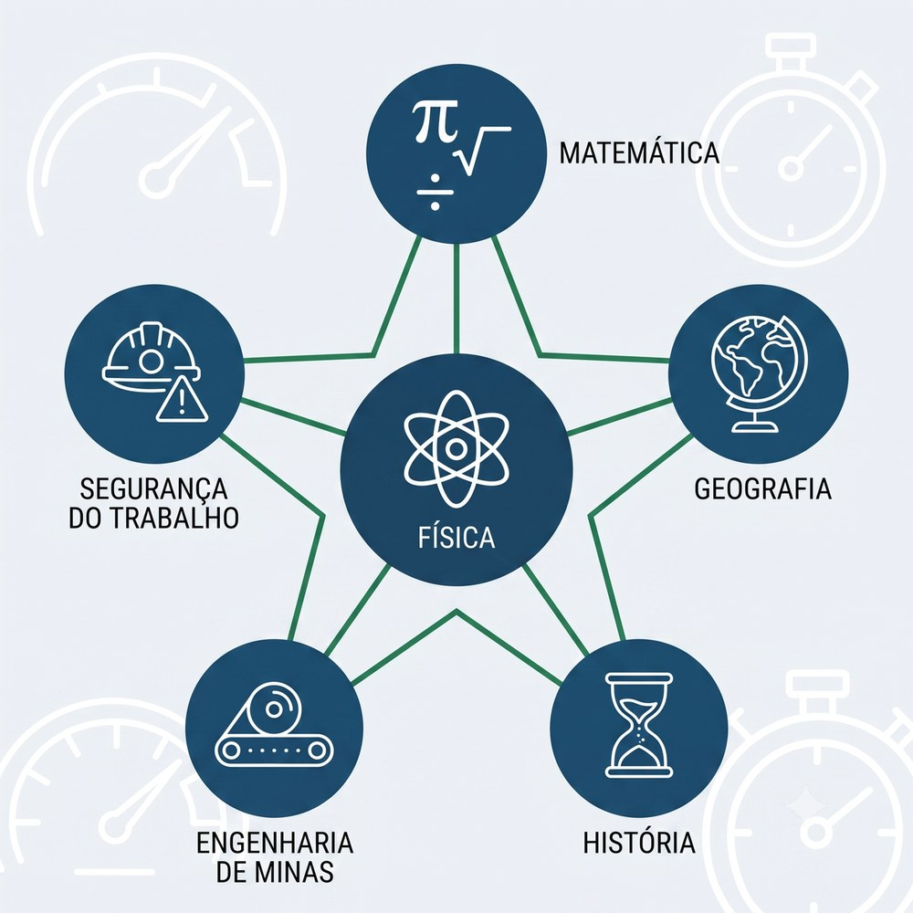
Quando a Física se encontra com outra disciplina, o caminho até a resposta segue oito etapas — sempre as mesmas. Esse protocolo chama-se Componente 5 e é o método que técnicos de mineração usam para resolver problemas reais. Pratique-o aqui: você vai reaplicá-lo integralmente no Trabalho (TR) desta trilha.
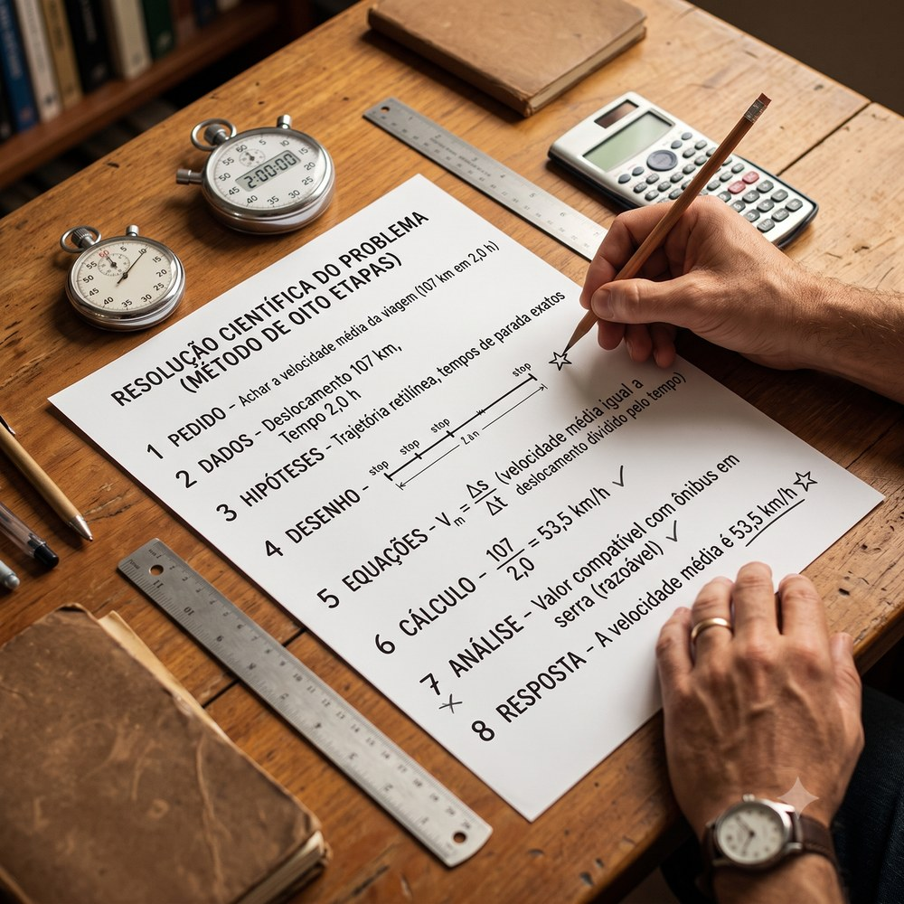
| Etapa | Nome | O que fazer |
|---|---|---|
| 1 | O que está sendo pedido? | Releia o enunciado. Escreva com suas próprias palavras o que é pedido. |
| 2 | Quais são os dados? | Liste cada grandeza com seu símbolo, valor e unidade. |
| 3 | Quais são as hipóteses? | Declare o que você vai assumir (trajetória retilínea, velocidade constante etc.). |
| 4 | Qual é o desenho do problema? | Faça um esboço, diagrama ou esquema simples da situação. |
| 5 | Quais são as equações? | Identifique a equação do TT. Isole algebricamente a variável pedida. |
| 6 | Cálculo com unidades | Substitua os valores. Acompanhe as unidades passo a passo até o resultado. |
| 7 | Análise de resultados | O resultado faz sentido? Compare com valores típicos da mineração. |
| 8 | Responda o que foi pedido | Escreva a resposta completa, com unidade e interpretação no contexto. |
O ônibus da linha Ouro Preto–Belo Horizonte cumpre três trechos de estrada: 19 km em 25 min, 28 km em 30 min e 60 km em 45 min, com duas paradas de 10 min cada. Determine (a) a velocidade média da viagem completa e (b) a velocidade média considerando apenas os trechos em movimento. Explique por que os dois valores são diferentes e o que cada um descreve.
Um estudante calculou a velocidade média da mesma viagem somando as velocidades dos três trechos (45,6 km/h, 56,0 km/h e 80,0 km/h) e dividindo por 3, obtendo 60,5 km/h. Avalie o procedimento: em que condição a média aritmética das velocidades coincidiria com a velocidade média verdadeira? Demonstre com os dados do problema.
Uma correia transportadora opera a 3,5 m/s carregando minério de ferro britado de densidade aparente 2.200 kg/m³, com seção de carga de 0,072 m². A usina precisa elevar a produção de 2.000 t/h para 2.400 t/h. Determine a nova velocidade necessária e avalie se ela é compatível com a faixa de operação industrial (1,5 a 5,0 m/s).
Numa rampa de cava, a NR-22 e o plano de tráfego da mina limitam a velocidade a 25 km/h. Um caminhão fora de estrada percorre os 1,2 km da rampa em 2 min 20 s. O sistema de telemetria registrou, porém, um pico instantâneo de 34 km/h num trecho da descida. Avalie: houve infração? Justifique distinguindo as duas grandezas envolvidas.
No século XVIII, uma tropa de muares avançava a cerca de 4 km/h pela Estrada Real, cumprindo jornadas de 8 horas por dia. Considere o mesmo trajeto de 107 km entre Vila Rica e o arraial de Curral del Rei — hoje Belo Horizonte. Determine quantos dias a tropa levaria e compare com as 2 horas do ônibus atual, calculando o fator de aceleração histórica do transporte.
Em 19 de junho de 1878, na pista de Palo Alto, Eadweard Muybridge alinhou vinte e quatro câmeras ao longo do percurso e amarrou um fio a cada obturador. Quando a égua Sallie Gardner passou a galope, suas patas romperam os fios um a um, e cada câmera registrou uma fatia do movimento com exposição de aproximadamente um milésimo de segundo. A questão que motivava o experimento era antiga e aparentemente insolúvel: durante o galope, o cavalo chega a ter as quatro patas simultaneamente no ar? A olho nu, ninguém conseguia responder — o movimento era rápido demais.
As fotografias responderam: sim. E fizeram mais do que isso. Ao congelar o galope em instantes sucessivos, Muybridge produziu a primeira demonstração visual do que a Física chama de limite: reduza o intervalo de tempo o suficiente e o movimento revela sua estrutura interna. É exatamente o raciocínio do Tópico 3 — o mesmo que Sofia percorreu quando entendeu que o velocímetro não mede a viagem, mas o instante. O milésimo de segundo do obturador de Muybridge é o Δt → 0 da Equação 4, traduzido em prata e vidro.
Muybridge nunca escreveu uma linha de cálculo diferencial. Mas, ao decompor o galope em vinte e quatro instantes, deu ao mundo a primeira cronofotografia e abriu o caminho para o cinema — provando que a velocidade instantânea não é uma abstração matemática, e sim algo que se pode fotografar.
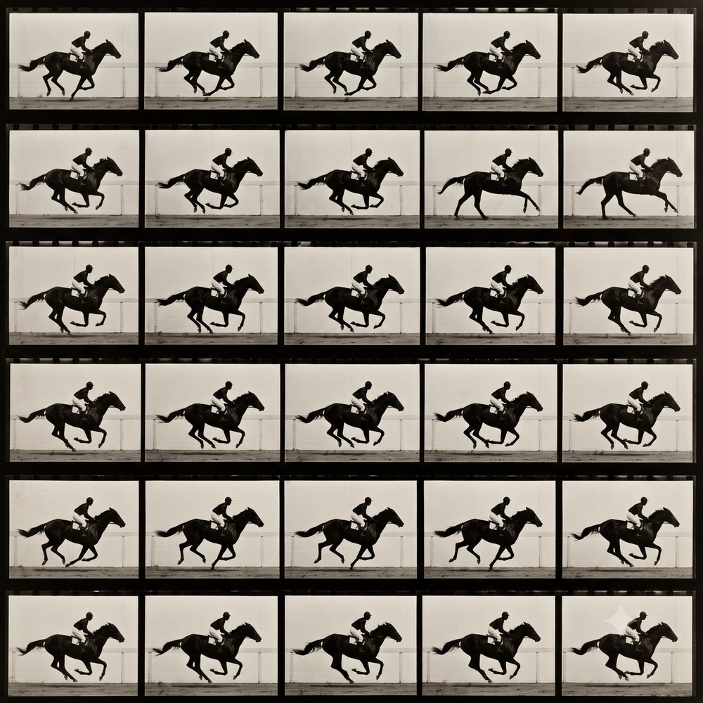
“Nenhum homem entra duas vezes no mesmo rio, pois quando nele entra já não é o mesmo rio, nem ele é o mesmo homem.”
BONJORNO, J. R. Identidade Saraiva: Física. São Paulo: Saraiva, 2024.
MÁXIMO, A. et al. Física: contexto & aplicações. São Paulo: Scipione, 2013.
TALAVEIRA, A. C. et al. Física: ensino médio, v. único. São Paulo: Nova Geração, 2005.
BLOOM, Benjamin S. (org.). O desenvolvimento de talentos na juventude. Porto Alegre: Globo, 1988.
HEWITT, Paul G. Física conceitual. 12. ed. Porto Alegre: Bookman, 2015.
NICOLELIS, Miguel. O verdadeiro criador de tudo: como o cérebro humano esculpiu o universo que conhecemos. São Paulo: Planeta, 2020.
PIAZZI, Pierluigi. Aprendendo inteligência: manual de instruções do cérebro para estudantes em geral. São Paulo: Aleph, 2008.
PIAZZI, Pierluigi. Inteligência em concursos: manual de instruções do cérebro para concurseiros e universitários. São Paulo: Aleph, 2013.
Estas Trilhas de Aprendizagem são concebidas, dirigidas e revisadas por uma equipe humana — autor, coautor, colaboradores, monitores e a equipe do Núcleo de Inovação e Desenvolvimento de Experimentos Científicos (NIDEC) e equipe da Coordenadoria da Área de Física (CODAFIS).
A inteligência artificial entra no processo como ferramenta, nunca como autora: é usada sob curadoria humana, com princípios claros, diretrizes pedagógicas explícitas e honestidade intelectual.
Assim, declaramos abertamente o uso de IA como assistente de redação e diagramação de todos os Objetos de Aprendizagem (Claude Opus 5 e Claude Cowork, Anthropic, 2026; Gemini Notebook, Google, 2026), do mesmo modo que se declara o uso de qualquer ferramenta de autoria.